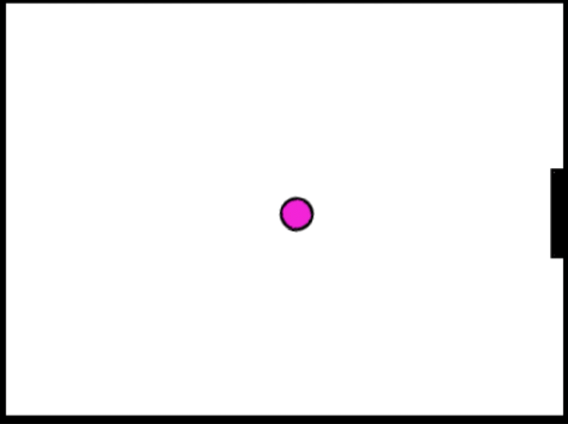
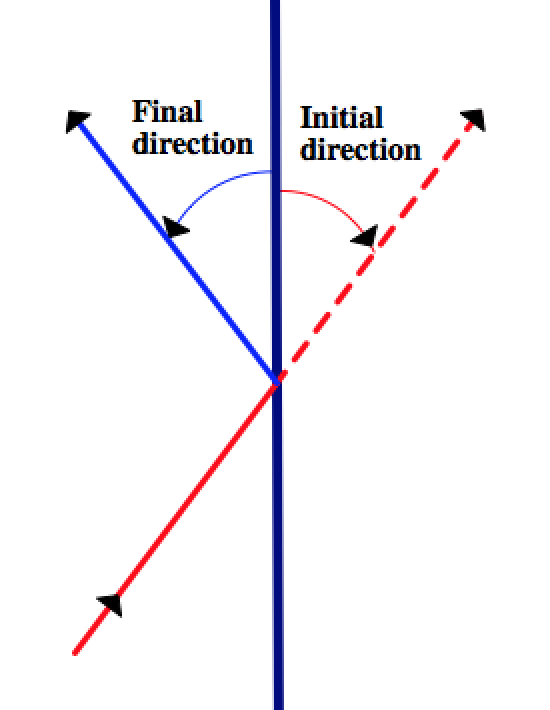
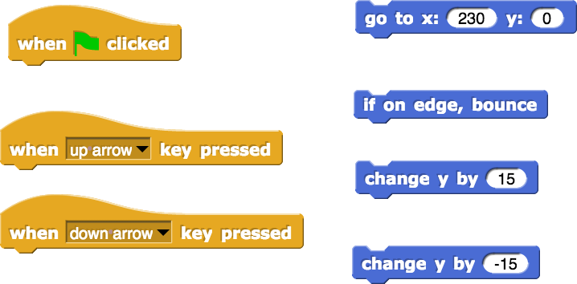
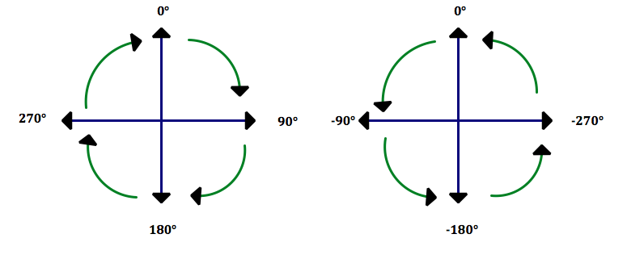
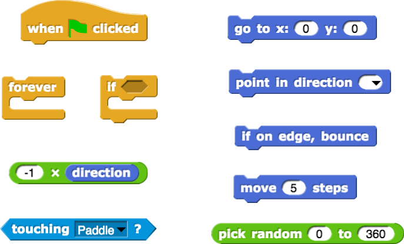
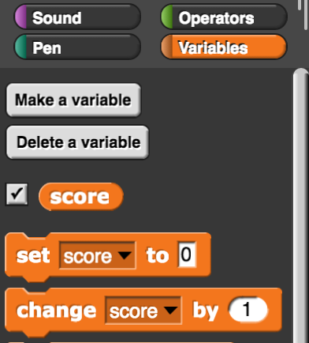
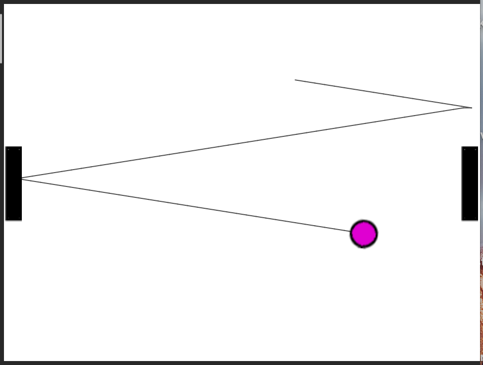

Lab 4: The Game of Pong
In this project, you are going to model a computer game called Pong, first developed by Atari in 1972. You will write the code for the paddle which will allow it to move up and down based on user keyboard input and also write the code for the ball which will allow it to bounce every time it hits a wall or the paddle.

-
 Discuss with your partner the mathematics behind the ball bouncing off the paddle. How does the initial direction of the ball as it hits the paddle relate to the final direction of the ball as it bounces off the paddle? The following diagram may help.
Discuss with your partner the mathematics behind the ball bouncing off the paddle. How does the initial direction of the ball as it hits the paddle relate to the final direction of the ball as it bounces off the paddle? The following diagram may help.
 - Create the paddle and the ball sprites and give them their costumes (filled rectangle and circle).
-
Examine the starter file where a rectangular paddle sprite and a circular ball sprite have been created for you. -
Write the code for the paddle first. The paddle should be allowed to move only up and down near the right edge of the screen. When the user presses the up/down arrow keys on the keyboard, the paddle should move up or down a certain amount but it should never wander off the edges of the screen. You may find the following blocks useful.
 -
The code for the ball is a bit trickier due to the paddle bounce.
Initialize the ball to appear in the middle of the screen and give it a random direction. Then check if the ball is at the edge of the screen or is touching the paddle. In each case the ball needs to bounce. Snap! already provides you with a block for bouncing off the edges of the screen.
You can write the code for the ball bouncing off the paddle by realizing that the ball bounces from the paddle with the negative of the direction at which it hits the paddle. Remember that in Snap! positive angles are measured clockwise from the 0°, up direction, and negative angles are measured counterclockwise from the 0°, up direction.

Now write the code for the ball. You may find the following blocks useful.
 - Write the code to have the paddle move up and down when the user presses the up arrow and down arrow keys. Don’t let the paddle move beyond the edges of the stage.
- Write the code to start the ball moving when green flag is clicked and to bounce off the stage edges and the paddle. Note that there is a built in block to bounce off the edges.
Do the above on your own but if you get stuck, look at these hints for the Game of Pong on how to proceed.
-
Add scoring to your game. Every time the paddles bounces off the ball, the player should earn a point and every time the ball hits the right wall, the player should lose a point. You can create a variable to keep track of the score.
 -
Create a second paddle to allow the game to become multiplayer game. Adjust your code to accommodate keyboard input from two users.
 -
Create a second paddle (or use the one from part B if you did that) and let this paddle be driven automatically by the computer for a “human versus computer” version of the game. Hint: You can automate the second paddle by using the following block from the Sensing menu: